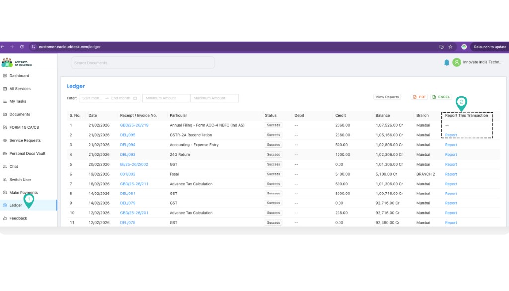
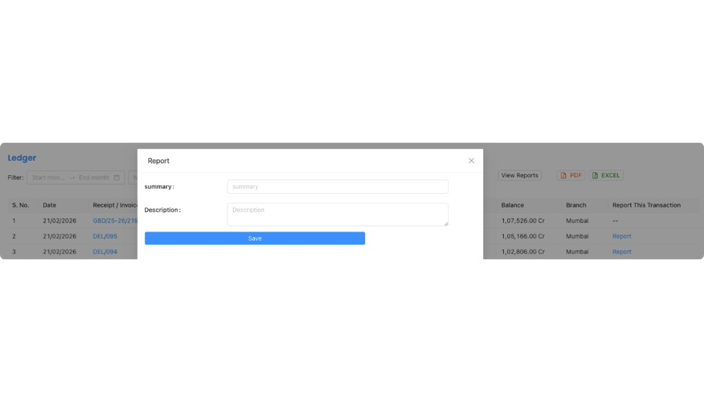
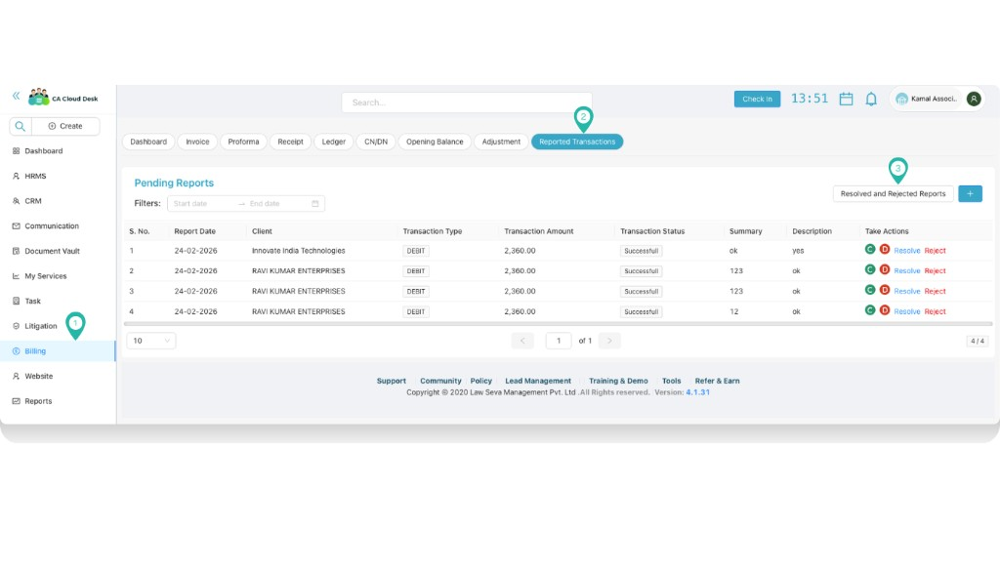
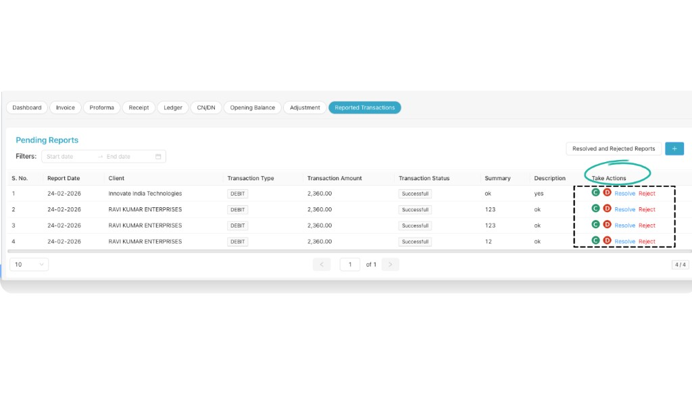
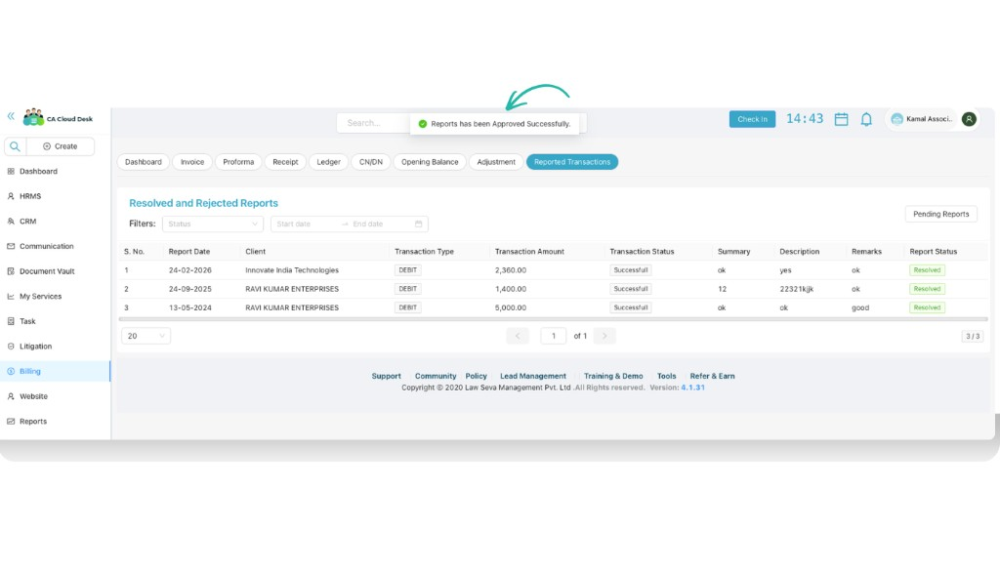
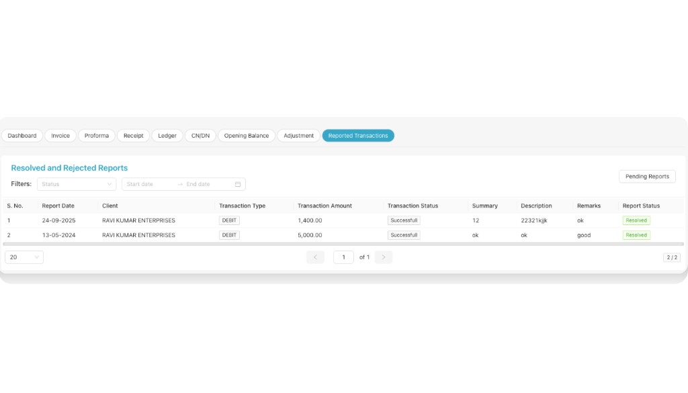

Reported Transactions
Clients can report a ledger transaction from the customer portal; you can then view, resolve, or reject those reports from Billing → Reported Transactions. This guide covers both the client flow and the admin flow.
Overview
Reported Transactions lets clients flag a ledger transaction (e.g. incorrect amount, wrong date) with a summary and description. As an admin, you open Billing → Reported Transactions to see pending reports, then Resolve or Reject each one with remarks and optionally create a Credit Note or Debit Note as needed. After action, a confirmation message is shown.
Client: Report a transaction (Customer portal)
From the customer portal, the client goes to Ledger and uses Report this Transaction to submit a report with a summary and description.
1 Go to Ledger → Report this Transaction
In the customer portal, open Ledger and click Report this Transaction for the transaction to report.

2 Report the transaction (summary & description)
Fill in the Summary and Description for the reported transaction, then submit. This creates a pending report that appears under Billing → Reported Transactions for admins.

Admin: Open Reported Transactions
From the main CA Cloud Desk app, go to the Billing module and open Reported Transactions. You can also use the ➕ (Plus) icon to add a new ledger adjustment from this area.
3 Open Billing → Reported Transactions
Go to Billing in the left navigation, then open Reported Transactions. You can switch between Pending reports and Resolved & Rejected to see history.

4 View pending reports
The Pending Reports section lists all transactions reported by clients that need action. Use the Date Filter to narrow records by a specific period.
Pending Reports
- All client-reported transactions awaiting your action.
Date filter
- Filter by date range to find reports in a specific period.

5 Take action: Resolve or Reject
From the Take Actions column you can:
- Resolve the reported transaction
- Reject the reported transaction
When resolving or rejecting, add suitable remarks. You can also create a Credit Note or Debit Note as per requirement.
Confirmation message
After successfully resolving or rejecting a transaction, a confirmation message (pop-up) will appear. The report then moves to Resolved & Rejected so you can review history anytime.


PDF guide
Download the full guide for offline reference: Guide PDF – Reported Transactions.